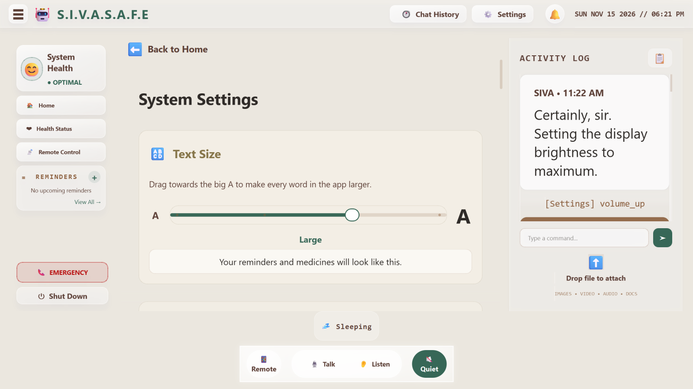

ஆய்வுCase study · SivaSafe
One agent, not many
SivaSafe is my final year capstone: a voice-controlled desktop assistant with facial authentication for elderly users. This page is about two decisions I made in it and three bugs I am glad I found.
Decision 1: one agent instead of the proposal's multi-agent design
My proposal specified a multi-agent reasoning system. When I came to build it I refined that into a single-agent tool-use architecture: one live Gemini session is the only reasoning core, it holds the spoken conversation, and it calls tools in 19 capability areas.
The reasons were cost, latency, reliability and simplicity. Every extra agent is another model call to pay for and wait on, and another place for the conversation to go wrong. For someone who just wants to say "remind me to take my medicine", one agent that answers quickly matters more than an elegant diagram.

Decision 2: a stricter face match
Sign-in uses face recognition with two OpenCV models: YuNet finds the face and SFace turns it into an embedding. I wrote the cosine-similarity match that compares each login against the enrolled face, and raised its threshold from 0.363 to 0.65, so a face has to be a much closer match before it is accepted.
- A two-blink liveness check, so a photo held up to the camera is not enough.
- A spoken password, transcribed offline by a Whisper model and compared as text.
- PBKDF2-hashed recovery codes as the way back in.
What I did not measure: the system was tested on one machine with one enrolled user. I do not have false-acceptance or false-rejection rates across other faces and hardware, so I do not quote any.
Three bugs worth telling
The backup API key that never switched on
SivaSafe has a second API key for when the first runs out of quota. The failover read correctly and never ran: it was checking for the wrong error type. A quota error cannot be summoned on demand, so I replayed exception shapes captured from the live API to find it, then fixed the detector.
Two race conditions in the messaging automation
WhatsApp was launched twice, because the second launch was issued before the first had registered. And messages were sent before the conversation list had finished loading. I made launch idempotent and gated sending on a screenshot-based readiness check that only proceeds once loading has completed.
Numbers I measured
Those two times are Gemini's response time for each kind of request, not the app's full voice round trip. My next assistant, AJ, runs its model on the laptop instead.
